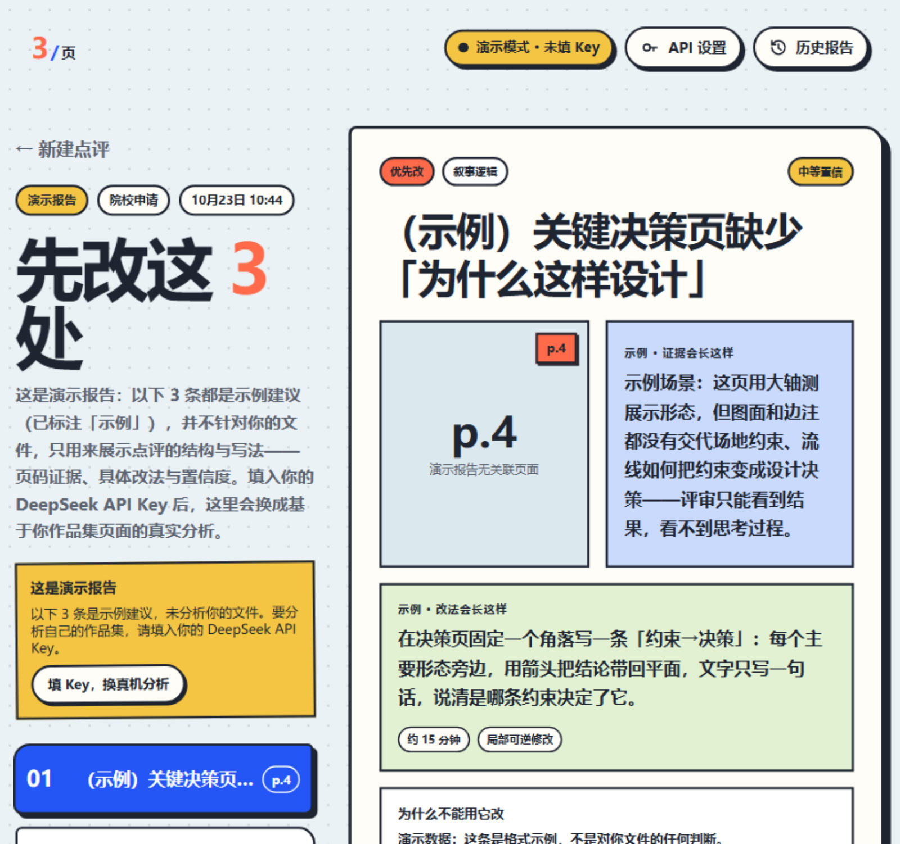

给作品集一个"有页码、有证据、敢说『不确定』"的第一轮自检——上传 PDF，返回最值得改的 Top3 处。
求职与留学申请的作品集，普遍卡在同一个环节：没人能给具体、可执行、可追溯的反馈。我把这件事做成一个能直接跑的产品原型。
作品集是设计类求职/申请中最重的交付物，但反馈链路极不透明：导师回复笼统、第三方付费点评贵且不可追溯。目标：做一个轻量工具，用户上传 PDF 后立刻拿到 带页码证据、具体改法、工作量估计与置信度 的 Top3 修改建议，并把"先改哪 3 处"讲清楚。
目标用户：即将投递作品集的设计类学生与求职者（建筑、城市设计方向为主）。
动手开发前先做研究：2026 年 9 月完成 6 场真实用户访谈（P01–P06：院校申请型 3 人、求职型 3 人，其中 3 场含原型测试），另请 1 位设计院导师（P07）做补充评审、校准评审标准；全部访谈有录音与匿名引用许可，并沉淀为访谈台账与编码矩阵。先立 4 个假设，再用访谈逐条验证：
研究直接改了产品决策（P0）：只给 Top3 带页码的修改项而非长报告、申请/求职双模式切换、每条建议带置信度标记、总分弱化，并给临近截止的用户加风险提示。
流程：上传 PDF → 本地渲染前 12 页 → 压缩为页面截图 → 按用途（院校申请 / 设计求职）选择评审标准 → 调 DeepSeek API → 解析结构化结果 → 渲染为带页码证据的报告。
两种评审模式各配独立提示词；报告含优先级 / 类别 / 置信度标签、工作量与可逆性标注、覆盖范围说明。
研究数据见上节（6 场访谈 + 假设验证 + 编码矩阵）。尚缺的是上线使用数据。现已在报告页加入逐条采纳标记（会改 / 不改及原因）、点评耗时与证据查看记录，数据只存在用户浏览器本地，可一键导出匿名 JSON（不含文件名、PDF 内容与 API Key）。收集到真实数据前不编造采纳率，结果会同步回本页与简历。
完成一个可运行的单页原型：演示模式无需任何配置即可体验完整点评流程；真机模式由用户浏览器直连 DeepSeek。包含历史报告记录、提交倒计时输入、院校申请/设计求职双模式、优先级与置信度标签、演示内容明确标注等细节。
在线体验（部署在本文档所在站点）：打开 AI 作品集点评助手 →
独立完成：需求定义、信息架构、前端实现、提示词设计、隐私与演示机制。全程没有用框架，把每一步走明白了。
这次的顺序是对的：先研究、再定 P0、才动手开发。下次会改：上线后补埋点与使用统计（尤其试用→填 Key 的转化）、支持更多模型与多文件上传，并把真实使用数据同步回本页与简历。
